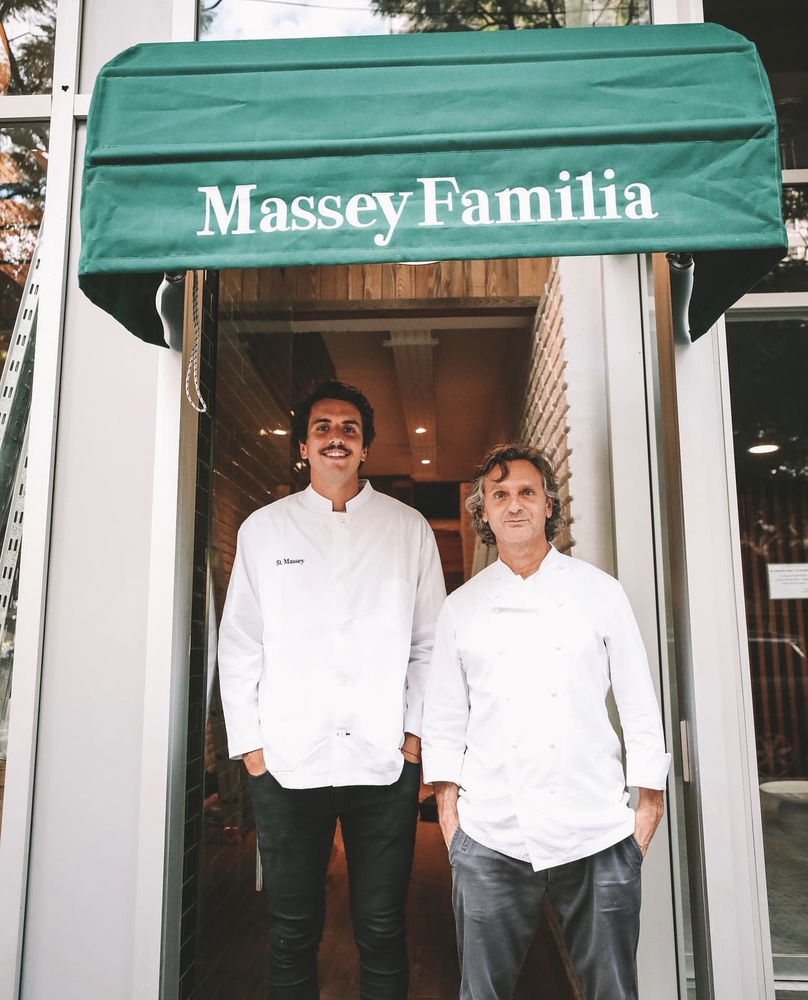
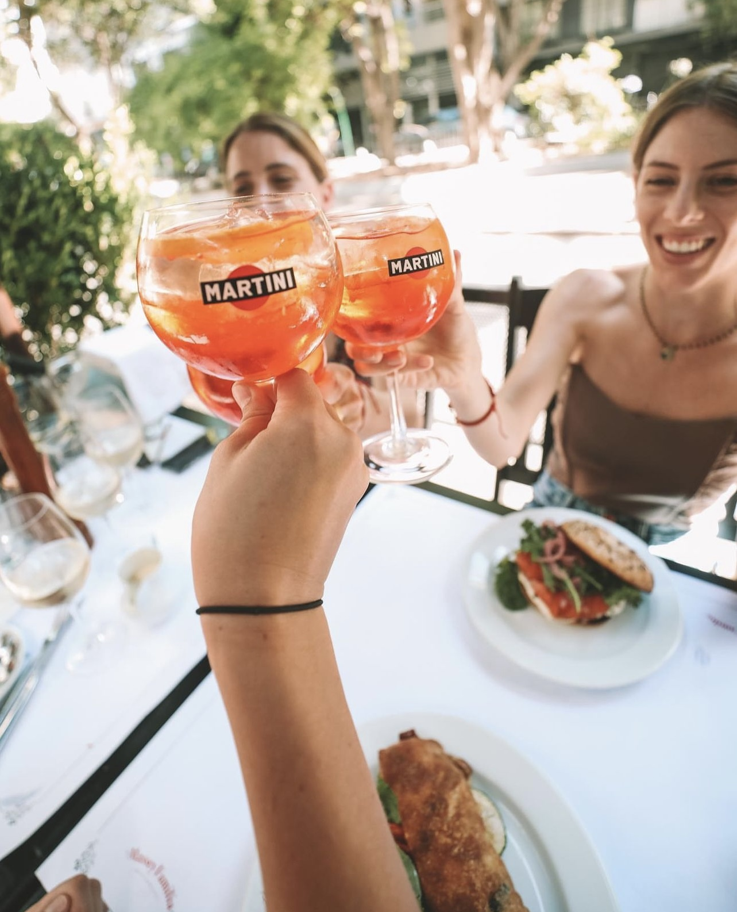
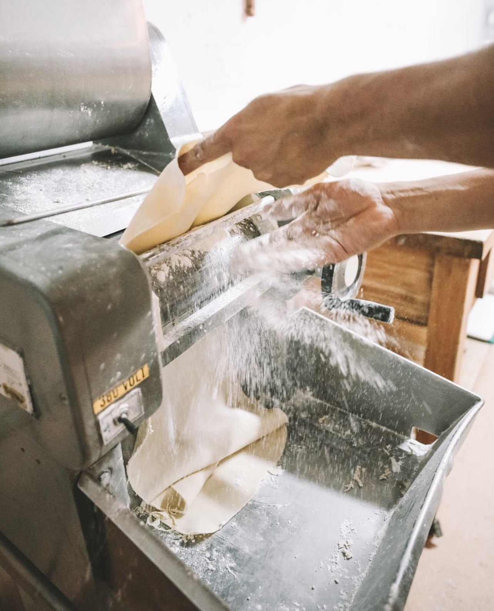
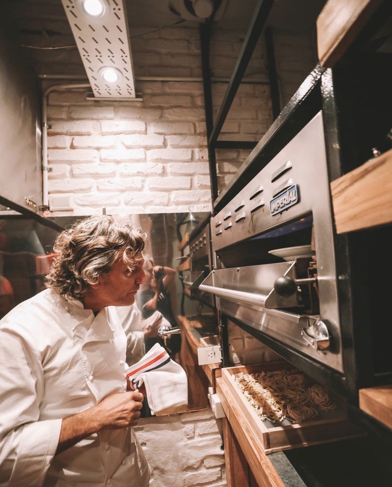
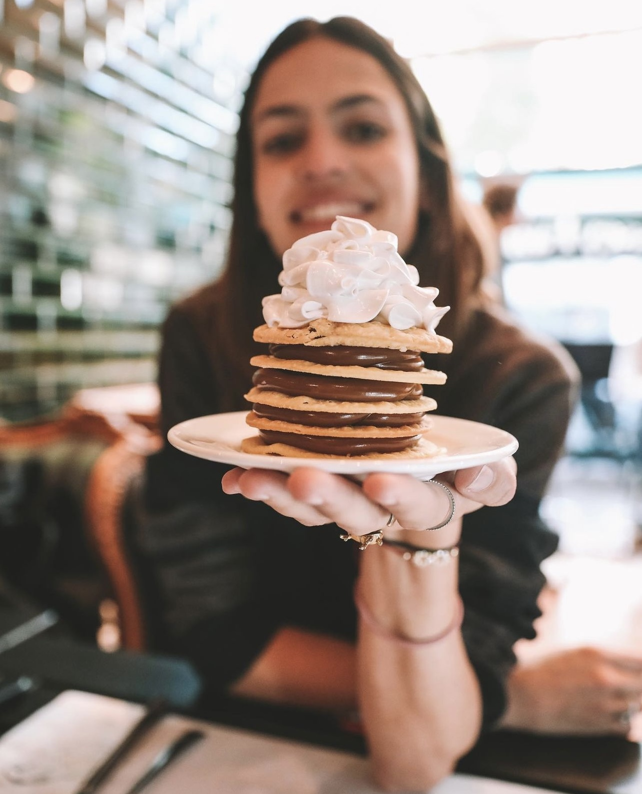

Massey Familia
Restaurante, Almacén & Bakery
En Massey Familia -"por la gente que lo rodea y los que lo conocen desde siempre"-
Estilo moderno y clásico, rústico y refinado; platos simples y ricos, recetas posibles y exitosas. Con su socio Roque Ureta estrenó Massey Familia, un restaurante nutrido por sus viajes a la Toscana, al Mediterráneo y a Londres.
Pablo eligió la faceta tan itálica de la pasta fresca, elaborada con los mejores productos, harinas orgánicas, papas de Tandil, mozzarella top. Cuenta con dos maquinas italianas, la fundamental caminadora y la asombrosa Monferrini. Su jefe de cocina es Rodrigo Gonzalez. La carta es una amplia lista de pastas con las miles de opciones de salsas, más entradas apropiadas y postres espectaculares.




